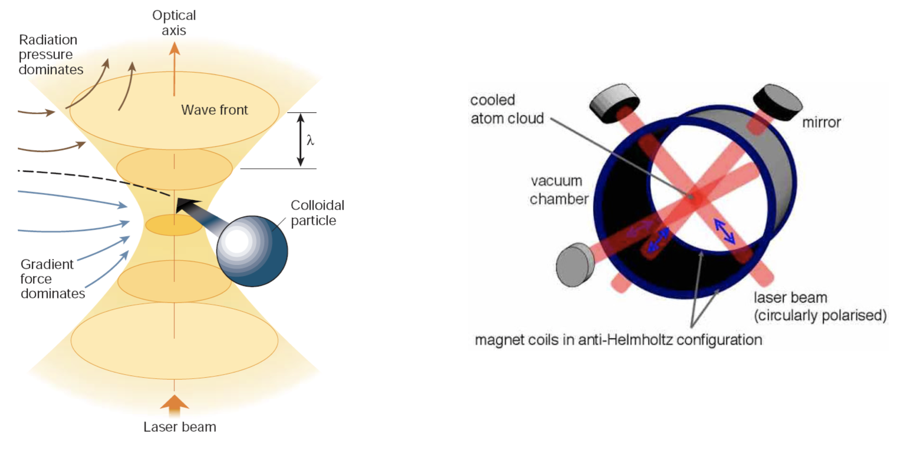

This page was generated from `/home/lectures/exp3/source/notebooks/L13/Energy Transport.ipynb`_.

Energy Transport and Momentum Transport of EM Waves¶
Energy Transport¶
A characteristic property of waves is that they transport energy rather than mass. It is this energy which we typically detect with the help of a photodetector and not the electric field. We therefore need a quantity that describes this eneryg transport.
To obtain such a quantity we recall the energy density of the elkectric and magnetic field which in sum give
\begin{eqnarray} w=w_e+w_m=\frac{1}{2}\epsilon_0 \vec{E}\cdot\vec{E}+\frac{1}{\mu_0}\vec{B}\cdot\vec{B} \end{eqnarray}
Using the relation between the electric and the magnetic field amplitude we can further simplify the above expression for electromagnetic waves to \(w=\epsilon_0 E^2\), but we will keep the full expression in the following.
Let’s assume that we look at a volume \(V\) in which we have an electromagnetic wave, then the change in the energy inside that volume with time is given by
the integral over the time derivate of the energy density \(w\). Applying energy conservation, the loss of energy in our volume must be due to some energy flow out of the volume that is described by a quantity \(\vec{S}\) that is describing that energy current density. If we consider a spherical surface without loss of generality, then the integrated energy flux through the surface should amount for the loss of energy in the volume, i.e.
where \(\vec{n}\) is a unit vector normal to the outside of the surface. The integral on the right side is running over the whole surface of our volume. Note that the minus sign on the right side occurs due to the fact that the volume is loosing energy. We may now apply Gauss’ theorem and convert the surface integral on the right side by a volume integral over the divergence of the energy current density \(\vec{S}\), i.e.
We thus obtain the continuity equation
under vacuum conditions, meaning that we have no free charges and no charge current density.
We may use this equation to calculate the energy current density \(\vec{S}\) by the time derivative of our energy density of the electromagnetic wave.
We may simplify that expression with the help of Maxwell’s euqations
\begin{eqnarray} \frac{\partial \vec{B}}{\partial t}=-\nabla \times \vec{E}\\ \frac{\partial \vec{E}}{\partial t}=\frac{1}{\mu_0\epsilon_0}\nabla \times \vec{B} \end{eqnarray}
and the \(\vec{H}=\vec{B}/\mu_0\) relating the magnetic field \(\vec{H}\) to the magnetic flux density \(\vec{B}\). Inserting this in eq. \ref{eq:ed}, we find
Using the vector identity
we find
which is valid for vacuum and our energy current density can be identified as
The vector \(\vec{S}\) is called the Poyning vector and describes the energy transport of an electromagnetic wave. The equation \(\frac{dw}{dt}+\nabla \cdot \vec{S}=0\) can be also generalized to a situation where charge current densities \(\vec{j}\) are present. In this case we have to include in our consideration the work done by the electric field on the charge current density, which is \(\vec{E}\cdot\vec{j}\)
This equation is known as Poynting theorem and just a way of writing energy conservation.
Let’s have a closer look at the Poynting vector, which we can write with the help of the magnetic flux density \(\vec{B}\) as
The magnitude of the Poynting vector is then given by
\begin{eqnarray} S=|\vec{S}|&=&\epsilon_0c^2|\vec{E}||\vec{B}|\\ &=&\epsilon_0 c E^2=I \end{eqnarray}
which is the same as the intensity. The magnitude of the Poynting vector describes the intensity of an electromagnetic wave or the nergy flow through an area. It therefore has the unit of an intensity, which is \(W/m^2\).
If we now have plane wave
in the real value description, then its intensity is
at a position \(\vec{r}=0\) with \(I_0=c\epsilon_0 E_0^2\). As we commonly calculate the intensity as the time average over one cycle of oscillation, we find for this wave the intensity
This is the intensity we would record with the help of a detector and the flow of energy is set by the direction of the Poynting vector. This is not to be confused with the flow of the wavefronts, which go in the direction of the wavevector.
Example
to be added
Momentum Transport and Radiation Pressure¶
Like the energy of a wave that can be transfered to objects like photodetectors, elecromagnetic waves also transport momentum, which can be turned into a motion of objects, when waves collide with massive objects. The momentum is a property of the electromagnetic wave. We would like to describe that so-called radiation pressure (the flow of momentum through an area) in a very simple way.
For this purpose we need he relativistic energy
which can be calculated from the momentum \(p\), the speed of light \(c\) and the mass \(m\). As lighwaves propagate with the speed of light, they cannot have a mass and the second term ist zero. The momentum of an electromagnetic wave is thus given by its energy devided by the speed of light
Therefore the momentum density in a volume must be also equal to the energy density devided by the speed of light.
Therefore the momentum density \(dp/dV\) is directly related to the magnitude of the Poyting vector and the intensity.
The momentum that is therfore transported through an area \(A\) in a time \(dt\) by electromagnetic radiation is given by
since the volume from which the momentum comes is \(dv=A c dt\). Consequently, the momentum current density (momentum per time and area) is after a slight transformation given by
As \(dp/dt\) can be identified as a force the left side corresponds to a force divided by an area and thus the radiation pressure we are looking for.
So far, this is a hypothetical radiaton pressure, which we relate to the flow of momentum. It becomes a real pressure, if the radiation interacts with some surface.
If we consider a perfectly absorbing surface of area \(A\), then the momentum of the electromagnetic wave is completely transfered to the surface and
is the radiation pressure for perfect absorption.
If we have, however, a perfectly reflecing surface, we transfer due to the reflection, twice the momentum to the wall and therefore teh radiaton pressure for perfect reflection is
Thus if you want to measure radiation pressure, its best to use reflecting surfaces. This has been done for the first time in an experiment by Nichols and Hull in the years from 1900-1903.
Radiation Pressure measurements¶


Fig.: Experiment by Nichols and Hull at Darthmouth college to measure radiuation pressure of light being reflected by two mirrors.
Nichols and Hull mounted therefore the two mirrors on a torsion spring in a geometry much like the Cavendish experiment. The light falling on both mirrors creates tiny forces which elongate the torsionspring which is mounted in a vessel where air is removed. From the elongation one may determine the forces and thus the pressure. From a separate measurement of the absorption and conversion of light into heat (with a Boulometer), one can deermine the intensity or energy contained in the radiation.
Comet Tails¶

Fig.: Ion and dust tail of the comet Neowise photographed in 07/2020 by B.Cichos.
Radiation pressure is also of importance in astronomy and in particular visible in the tail of comets. Comets show tails composed of light gas ions and dust particles which seperate under the influence of radiation pressure. While orbiting around a star, the radiation pressure pushes the ligh gas ions radially away from the star, while the dust particles follow a curved shape ben towards the orbit due to their larger mass. This is also visible in the photograph we took in July 2020 for the comet Neowise which passed earth in a very spectacular way.
Optical Tweezers and Magneto-optical Traps¶
Radiation pressure has also a huge importance form the trapping of microscopic or even atomic species. The left image shows the principle of optical tweezers, which are used to hold colloidal particles in a tightly focused laser. Radiation pressure thereby tries to push the colloids out of the focal region, but addition forces due to the strong gradiens in light intensity keep the particle in the focal position. This teachnique is heavily used in biophysics to measure minute forces that are generated by molecular motors or to apply forces to study molecular mechanism of protein folding or ezymatic action like in the CRISPR/CAS gene scissors.

Fig.: Principle sketch for optical tweezers (left, taken from a publication by D. Grier) a a sketch of a magneto-optical trap (MOT, right) as used for cooling and trapping of atomic gases for atomic clocks or Bose Einstein condensation.
On the other side, radiation pressure in conjunction with magnetic fields is used to confine and cool atoms to very low temperatures of a few milli Kelvin. Additional cooling mechanism may bring such an atomic gas then down to even lower temnoeratures that the gas condenses in to a so-called Bose-Einstein condensate. This is done in Magneo-Optic-Traps using Hyperfine transition of the atoms of the gas.
Such atomic traps are also be used to create highly precise atomic clock, which are applied in GPS measurements or also as tools for the detecion of gravitational waves. Such an atomic clock is shown in the image below. In particular, this ressembles to be a Fountain Atomic Clock, where the laser colled atoms from a laser trap at the bottom are shot be the radiation pressure through a microwave cavity, where the population of hyperfine energy levels is changed.

Fig.: Principle sketch for optical tweezers (left, taken from a publication by D. Grier) a a sketch of a magneto-optical trap (MOT, right) as used for cooling and trapping of atomic gases for atomic clocks or Bose Einstein condensation.
The atoms pass twice through this microwave cavity in a fountain like fashion. And deliver a precise measurement of a transition frequency between energy levels in the atoms, which is used as a reference to synchronize other clocks.